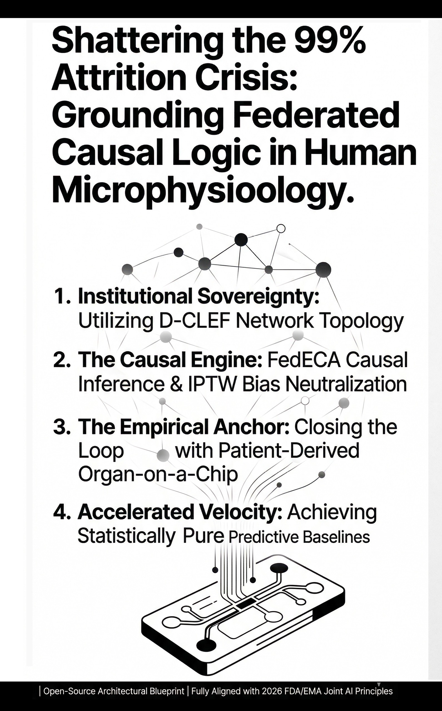

RZST
RZSTRZST Synthesis 001: Grounding the Ghosts — Causal Rigor Over Computational Hype.
The Era of the Data Silo is Over.


This document serves as an open-architectural blueprint to synchronize global research without the cost and risk of data pooling. By integrating AI-driven simulations with Organ-on-a-Chip validation, this proposal outlines a high-fidelity, mathematically testable path from in-silico hypothesis to physical clinical reality—overseen by Human-in-the-Loop governance to ensure every step is grounded in real-world safety and logic. This framework is submitted not for commercial acquisition, but for rigorous peer review, regulatory audit, and systemic validation.
The frameworks, workflows, and predictive baselines described in this proposal outline a high-fidelity in-silico blueprint—a rigorous computational simulation designed to precede and accelerate physical integration. While live clinical trials and physical Organ-on-a-Chip deployments represent the targeted operational phase, the current architectures operate strictly as stateful, mathematical frameworks. We maintain a "Zero-Data-Contact" policy at this stage, ensuring HIPAA and GDPR integrity by design before a single byte of live patient data is engaged. This theoretical blueprint is presented strictly for peer review, stress testing, and systemic validation prior to its execution in gold-standard clinical environments.
The Proposed Blueprint: Architecture & Synthesis
A comprehensive deep-dive into this proposed stateful orchestration framework and its flagship translational medicine proof-of-concept—from the core architectural engine and validation matrix to the multi-vector approach, in-silico rigor, and peer review stress tests.
High-fidelity logic for a low-patience world.
Sovereignty & Ethics: The Non-Extractive Interface
The RZST blueprint recognizes that the inclusion of rural, tribal, and historically marginalized populations requires a fundamental shift in data governance. To align with federal CARE Principles for Indigenous Data Governance, the framework proposes a strictly non-extractive model: we architecturally propose to “Interface, Not Integrate.”
I. Tribal Data Sovereignty & The Sovereign Vault
- Health History Protection: The simulated framework is engineered to ensure that all sensitive patient health history and genomic data remain permanently locked within the community’s local, impenetrable data silos.
- Local Control: By design, the architecture prevents the unauthorized extraction or centralized “pooling” of data that has historically alienated Indigenous and rural communities. Sovereignty is mathematically maintained at the source.
II. Zero-Data-Contact & Equitable Synthesis
- The D-CLEF Protocol (Kuo et al., 2025): The blueprint proposes utilizing the decentralized network topology of D-CLEF to achieve absolute “Zero-Data-Contact.” Raw data never leaves institutional or tribal firewalls; only validated mathematical abstractions transfer across the orchestration hub.
- The FedECA Core (Owkin / du Terrail et al., 2025): To ensure that insights from smaller sovereign nodes are not marginalized by larger urban hospitals, the architecture relies on the FedECA causal inference engine. This mathematics ensures equitable representation and bias neutralization without requiring data exposure.
The Orchestration Engine: Synthesizing Validated Models
At the core of this architecture is a stateful multi-agent orchestration layer that fuses two distinct, peer-reviewed methodologies.
- The Network: We deploy the D-CLEF architecture (Distributed Cross-Learning for Equitable Federated models), a decentralized, privacy-preserving framework pioneered by Kuo et al. (2025).
- The Mathematics: We integrate the FedECA causal inference methodology, recently validated by Owkin (du Terrail et al., 2025), which utilizes Inverse Probability of Treatment Weighting (IPTW) in distributed settings.
This synthesis is not a probabilistic guess; it is a mathematical mandate. By fusing D-CLEF’s secure routing with FedECA’s causal logic, the framework proves the statistical honesty of the data without ever exposing the underlying patient records. The engine functions as a closed-loop execution pipeline, utilizing Directed Acyclic Graphs (DAGs) to enforce strict, unidirectional computational pathways. This topological constraint physically prevents algorithmic hallucination or trajectory drift; the data can only move forward through pre-approved logic gates.
The Validation Matrix: Auditing Systemic Viability
To ensure these architectural deployments mathematically optimize both real-world efficacy and health economics, the engine evaluates every proposal across four orthogonal axes:
[Axis I] Capital Optimization (Zero-CapEx Design)
This blueprint minimizes the physical and financial resources required for validation. By filtering out high-failure models early with decentralized compute, we mathematically optimize the pipeline's Energy Return on Investment.
[Axis II] Data Sovereignty (The LoRA Federation)
Utilizing Kuo's D-CLEF network principles, this architecture processes horizontally-partitioned data without extracting sensitive records. We simulate the local freezing of foundation models, federating only the Low-Rank Adaptation (LoRA) matrices. By transmitting only the mathematical pattern (the weight updates) rather than the raw data payload, this architecture establishes low-latency, privacy-preserving intelligence transfers via Parameter-Efficient Fine-Tuning (PEFT) while strictly preserving institutional firewalls.
[Axis III] Algorithmic Equity & Statistical Anonymity
Ending the era of "Geography as Destiny" in clinical research. This framework dismantles the structural bias inherent in centralized data pooling. By simulating Owkin's IPTW methodologies strictly behind local firewalls, we ensure the predictive baseline reflects true population diversity rather than localized hospital demographics. This statistical anonymity neutralizes selection bias before model training occurs, ensuring outputs are mathematically fair and scientifically valid for all patient populations.
[Axis IV] Longitudinal Provenance & State Maintenance
We design architectures intended for long-term strategic foresight. These stateful frameworks guarantee robust longitudinal data provenance and Architectural Readiness for ISTAND Integration. This ensures the theoretical framework is structurally prepared for stringent FDA and EMA regulatory audits before physical trials commence.
Collaborative Intelligence: "Governed Autonomy"
This blueprint does not propose an unsupervised, black-box methodology. The architecture relies on an absolute division of labor through "Governed Autonomy."
Humans-in-the-loop act as the definitive regulatory firewall by setting strict biological and physical constraints before the multi-agent framework executes the computational heavy lifting. The AI cannot generate hypotheses that violate the laws of nature because human domain experts lock the parameters prior to execution, preventing trajectory drift at the source.
Blueprint for Grounded Medicine
The Four-Step Pipeline
How this framework orchestrates artificial intelligence for complex protein-based diseases, including ALS and Lewy Body Dementia.
Privacy isn't a policy; it's the architecture.
Raw medical data remains secure within localized hospital “silos.” Before any intelligence traverses the network, it undergoes rigorous Local Validation. The data is mathematically cleaned and structurally validated at the localized source. Only this validated mathematical knowledge is transmitted, preserving patient sovereignty and preventing the propagation of corrupted or “noisy” data across the network.
Causal rigor for a chaotic world.
The blueprint operates as the ultimate Bias Filter. It applies causal rigor locally before knowledge is shared, mathematically isolating the true mechanisms driving neurodegeneration. By enforcing this causal framework, the architecture explicitly prevents the AI from “hallucinating” false correlations or tracking localized noise, ensuring that only biologically sound insights move forward.
Decoding the language of life's smallest failures.
A multi-agent panel coordinates knowledge synthesis, constructing multi-scale protein models to identify viable therapeutic pathways for targeted protein aggregates. This step is governed by strict Biological Constraints. The multi-agent panel operates entirely within the physical laws of nature established by the Human-in-the-Loop, physically preventing stochastic guesswork when mapping highly disordered proteins.
Closing the loop between AI and Anatomy.
The architecture plans for a future-state physical loop closure, acting as the ultimate Reality Check. By comparing in-silico AI predictions with physical Organ-on-a-Chip (OoC) readouts, an error vector is generated to backpropagate knowledge and continuously calibrate the model. Overcoming the “Transcriptomic Mismatch” serves as the critical validation bridge, proving definitively that the in-silico mathematics hold up against living, physical human biology.
AI in Translational Medicine
To demonstrate the potential of this architecture, it was immediately directed to resolving systemic capital inefficiencies in neurodegenerative pipelines— a domain chosen precisely because it represents the most regulated, most ethically complex, and most data-siloed environment on earth. If the blueprint works here, it works anywhere.
This flagship architecture unifies the D-CLEF Architecture (Distributed Cross-Learning for Equitable Federated models) pioneered by Kuo et al. (2025), illustrating the framework's capacity to handle the most highly regulated data on earth—pending future physical validation.
The LoRA Bypass
The architecture refactors standard federated learning by simulating the local freezing of foundation models and transmitting only Low-Rank Adaptation (LoRA) matrices. This establishes low-latency, privacy-preserving intelligence transfers via Parameter-Efficient Fine-Tuning (PEFT) to bypass hospital IT bottlenecks.
The Causal-Privacy Breakthrough
By simulating Inverse Probability of Treatment Weighting (IPTW)—as established by du Terrail et al. (Owkin, 2025)—strictly behind local firewalls, agents generate bias-corrected causal insights without violating HIPAA or extracting raw patient records.
Accelerating Pipeline Velocity
Aggregating these simulated insights generates a mathematically pure predictive baseline (FedECA), drastically accelerating the timeline to reach gold-standard physical clinical trials for ALS and Lewy Body Dementia while maintaining absolute GDPR/HIPAA compliance.
The Architectural Synthesis Proposal
We are proposing a computational architecture designed for resolving systemic capital inefficiencies in neurodegenerative pipelines and the years lost navigating pre-clinical phases. This proposed blueprint drastically accelerates the timeline to reach gold-standard physical clinical trials.
To achieve this, we have engineered an in-silico pipeline that fuses two state-of-the-art frameworks. First, we deploy the D-CLEF (Distributed Cross-Learning for Equitable Federated models) network, a privacy-preserving decentralized architecture pioneered by Kuo et al. (2025). Second, we operationalize the FedECA methodology—recently validated by Owkin (du Terrail et al., 2025) in Nature Communications—to generate synthetic predictive baselines using Inverse Probability of Treatment Weighting (IPTW).
The Novelty: Here is where we push the boundary. Owkin proved FedECA works for standard oncology covariates. We are the first to combine Kuo's network with Owkin's math, and deploy it specifically for target proteinopathies using Multi-scale Protein Language Models. Furthermore, we solve the biological "black box" problem with a pipeline that bridges these federated insights directly into future in-vitro physical validation using Organ-on-a-Chip technologies. With this design, the blueprint connects decentralized computational frameworks directly to generative biological models.
A Multi-Vector Approach
The following vectors represent the blueprint architecture:
Vector I: Generation (The Silicon Substrate & Biological Grounding)
Utilizing multi-scale Protein Language Models (PLMs) operating on the silicon substrate to transform stochastic discovery into high-probability, biologically-grounded molecular design.
Vector II: Architected Deployment (The Physical Bridges)
Architecting the deployment of dynamic, federated computational networks (D-CLEF) designed for leading academic hubs. This framework generates Federated Predictive Baselines (FedECA) to mathematically de-risk pre-clinical assets, ensuring only the most viable candidates enter human testing. This establishes the blueprint for The Empirical Anchor: Validating AI-driven hypotheses through high-fidelity, patient-derived microphysiological readouts.
Vector III: Macro-Systems & Complex Infrastructure
The recursive pattern-process dynamics utilized to model micro-biological protein folding operate on identical mathematical principles at the macroscopic scale- Ensuring future applications are modeled distributed infrastructural enhancement. By applying strictly validated phase space analytics, we can scale closed-loop optimization architectures to broader macro-infrastructural systems.
In-Silico Rigor: Predictive Mathematical Blueprints
Before physical execution in decentralized networks or wet-labs, all architectures must undergo extreme computational and statistical validation. By validating all in-silico processes through rigorous statistical and cross-validation analysis, all outputs are mathematically sound and economically optimized before any physical capital is deployed.
A Note to the Reader
While you navigate this new era of medical architecture, remember: A powerful engine is only as good as the conscience steerin’ it. RZST isn’t just about the math; it’s about the mission.
Our Values: Grounded in Sovereignty, Equity, & Governance
While this engine operates at the forefront of stateful multi-agent orchestration and decentralized infrastructure, the foundational principles remain deeply rooted in regulatory compliance, data sovereignty, and equitable access. Through operationalizing ethical constraints into architectural advantages, the future of computational discovery empowers and protects all participants.
Institutional Data Sovereignty (The LoRA Imperative)
This architecture is designed to uphold the fundamental right of institutions, enterprises, and individuals to secure their own data. All federated computational models respect HIPAA, GDPR, and corporate firewalls by 'moving the intelligence' to the data. Utilizing the D-CLEF network principles pioneered by Kuo et al. (2025) and Parameter-Efficient Fine-Tuning (PEFT), this architecture federates only Low-Rank Adaptation (LoRA) matrices, ensuring that sensitive raw information is never extracted into vulnerable, centralized cloud silos.
Algorithmic Equity & Bias Mitigation
Sytematically mitigating algorithmic bias at the computational level, is non-negotiable. By simulating the IPTW causal inference techniques established by du Terrail et al. (Owkin, 2025) strictly behind local firewalls, this architecture neutralizes selection bias and confounding variables before neural network training occurs. This ensures the architecture generates equitable, causally-sound insights that accurately reflect marginalized or underrepresented populations.
Pipeline Acceleration & IND De-Risking (FedECA)
To systematically address the temporal and financial limitations of early-stage drug development: this architecture is a pursuit of Federated Predictive Baselines—building upon the methodology validated by Owkin (du Terrail et al., 2025)— and is driven by an economic and scientific imperative to reduce the timeline of medicine generation for neurodegenerative trials (ALS, Lewy Body Dementia). By generating a mathematically pure synthetic baseline, this architecture aims to elevate the statistical confidence of pre-clinical data packages prior to IND submission.
Human-in-the-Loop (HITL) Governance
This architecture is designed to enforce strict algorithmic governance. The 'engine' is not a black-box replacement for human insight; it is a collaborative, stateful orchestration layer. The goal is to ensure that human researchers and domain experts remain the definitive regulatory bottleneck—interpreting outputs, enforcing physical constraints, and preventing the trajectory drift and systemic errors inherent in unsupervised multi-agent systems.
Longitudinal Provenance & Auditability
With the future in mind, this architecture is engineered for long-term strategic foresight, not short-term data extraction. Immutable Auditability: Utilizing tools like Directed Acyclic Graphs to ensure regulatory-grade provenance for all AI-generated insights, providing absolute alignment with stringent regulatory pathways (e.g., FDA ISTAND and EMA guidelines). This architectural blueprint mitigates downstream systemic risks through transparent, reproducible auditing.
Closing the Computational Loop
Proposed Translation of Digital Twins to Physical Microphysiological Systems
Resolving the Efficacy Attrition Crisis: Grounding In-Silico Hypotheses in Human Microphysiological Readouts
The traditional pharmaceutical pipeline is constrained by a significant “translational gap”. Experimental compounds that demonstrate perfect binding affinities in computer simulations or exceptional efficacy in legacy animal models frequently fail during human clinical trials. In complex neurodegenerative diseases, this failure rate approaches 99%. To solve this, the engineering of this architecture focuses on de-risking the pipeline by substituting high-failure animal models with human-centric MPS.
The Convergent Horizon: Synthesizing AI and Microfluidics
While the current architecture represents a rigorously validated computational simulation based on the frameworks of Kuo et al. and du Terrail et al., the operational roadmap requires physical grounding. Creating a need to deploy a high-fidelity pipeline that directly couples the predictive outputs of Multi-scale Protein Language Models (PLMs) with living human biology.
- The Digital Output: In the sequence, the federated PLM predicts the optimized molecular candidate with high-fidelity binding probability to selectively bind to toxic proteinopathies, such as fibrillar alpha-synuclein.
- Physical Synthesis & Integration: The molecule is then physically synthesized and introduced into patient-derived Organ-on-a-Chip Microphysiological Systems (MPS).
- The Empirical Readout: The microfluidic chip physically measures target engagement and screens for critical predictive toxicology (e.g., hepatotoxicity via DeepDILI, directly operationalizing the mandates of the FDA Modernization Act 2.0).
- Dynamic Calibration: Backpropagating In-Vitro Loss Gradients to Refine Generative Molecular Design in a continuous loop.
Architecting for Mechanistic Proof
This closed-loop system is a regulatory necessity. Under the FDA’s Plausible Mechanism Framework, marketing approval requires incontrovertible proof of target engagement. By grounding in-silico simulations with empirical in-vitro data from human microfluidics, the aim is to provide the exact mechanistic proof required by regulators. This architectural blueprint perfectly aligns with the NIH’s July 2025 mandate to transition away from legacy animal testing, Establishing Mechanistic Proof: Bridging the In-Silico/In-Vitro Divide to Satisfy FDA 2026 Statutory Guidance.
The D-CLEF Lexicon: Proposed Mathematical Architecture
A Transparent, Rigorous Foundation for Federated Causal Inference
The orchestration layer operates on a fully transparent, mathematically rigorous theoretical foundation. We do not claim to have invented the base algorithms of federated learning or causal inference; rather, our breakthrough lies in the Architectural Synthesis of validated methodologies.
I. Building on Validated Frameworks
The pipeline synthesizes two monumental achievements in recent computational biology:
- D-CLEF (Kuo et al., 2025): A decentralized, privacy-preserving predictive modeling framework that operates without a single-point-of-control central server.
- FedECA (Owkin / du Terrail et al., 2025): A federated extension of the Inverse Probability of Treatment Weighting (IPTW) method for estimating treatment effects on distributed time-to-event outcomes.
II. The Engineering Breakthrough: Synthesizing Federated Privacy with Causal Inference: A Unified Architectural Sequence
The legacy system assumes you can have privacy (via standard Federated Learning), or you can have causality (via centralized IPTW pooling), but you cannot have both. Building upon Owkin’s foundational FedECA framework, we have to introduce an architectural sequence that explicitly bridges this gap for neurodegenerative diseases.
Localized Propensity Scoring
In our simulation, an algorithm within the localized, high-security institutional environment analyzes the raw patient data to calculate the propensity score—the probability that a specific patient received the experimental drug based on their baseline severity.
Generating a Bias-Corrected Pseudo-Population via Localized IPTW Execution
Still entirely behind the simulated firewall, the system applies the IPTW equations established by du Terrail et al. It mathematically weights the data, synthesizing a “Pseudo-Population” where treatment bias is theoretically flattened.
Secure Transmission via D-CLEF
Leveraging the decentralized, blockchain-backed architecture proposed by Kuo et al., the local node packages its learned causal insights into mathematical weight updates. It securely transmits only the loss gradients and weight deltas, ensuring rigorous de-identification via cryptographic abstraction.
Global Orchestration: Synchronizing Abstract Causal Gradients to Establish the FedECA Predictive Baseline
The network utilizes Federated Averaging to aggregate the data across all nodes:
θglobal(t+1) = ∑k=1K (nk / N) · θk(t+1)
- θglobal — The Synthesized Global Predictive Model (The proposed FedECA Predictive Baseline)
- θk — The isolated local model at simulated hospital node k
- nk / N — The weighting factor ensuring proportional representation across the network
We propose that θglobal becomes a statistically pure, bias-corrected Predictive Baseline derived entirely from decentralized data.
III. Temporal Compression: Utilizing In-Silico Baselines to Accelerate Clinical Entry (T=0)
In traditional development pipelines, reaching the starting line of a physical clinical trial (T=0) requires years of costly, high-failure empirical testing. In our theoretical architecture, we utilize in-silico baselines to accelerate this clinical entry.
We propose that θglobal becomes a statistically pure, bias-corrected pre-clinical baseline derived entirely from decentralized data. By synthesizing these frameworks, we offer a blueprint to begin the next era of medicine: Exponential acceleration in the process of getting validated candidates into physical trials.
This is a rigorously defended mathematical theory of architectural viability and a software architecture blueprint, grounded in the Federated Averaging literature and the FedECA methodology validated by Owkin (du Terrail et al., 2025) in Nature Communications.
A Note to the Reader
Beyond the silicon and the sensors lies a new standard for translational medicine. We aren’t just simulating data; we’re architecting hope for the patients who can’t afford to wait. Consider us farmers planting seeds meant to grow into Grounded Medicine for a Global Network. 🌿
Access the Open-Source Synthesis
This architectural blueprint is an open-source architectural proposal. We offer this simulated synthesis of the D-CLEF network topology (Kuo et al., 2025) and FedECA causal mathematics (Owkin / du Terrail et al., 2025) as a public good for the scientific community. Independent researchers, biostatisticians, and regulatory architects are encouraged to audit the logic, adapt the framework, or submit technical inquiries regarding our proposed in-silico pipeline.
Or reach us directly at contact@rzst.org
Architectural Resilience: Anticipatory Stress-Testing & Regulatory Alignment
Stress-Testing the Architecture: Anticipating the Hardest Questions
The following modules represent specific technical interrogations the blueprint will face from biostatisticians, FDA regulators, and GDPR/blockchain auditors. Each defense is the thought process of an AI Methods Producer operating under HITL Governed Autonomy.
Module I — Biostatistics
The FedECA & IPTW Stress Test
Unmeasured Covariate Drift & the Integrity of θglobal
The Attack
“IPTW is mathematically limited to balancing measured covariates (e.g., age, weight, known biomarkers). It cannot account for unmeasured confounding (e.g., localized hospital protocols, unrecorded patient habits, varying MRI calibration standards across the 22 CTSA nodes). If the engine is orchestrating decentralized weight updates via rigorous local validation (ΔWk) without pooling the underlying data, how does the central global model (θglobal) detect and correct for unmeasured, site-specific covariate drift before it corrupts the simulated Predictive Baseline?”
The AI Methods Producer’s Defense
Mitigating Unmeasured Confounding via High-Dimensional Latent Feature Extraction from Multi-Modal Data (PET/Transcriptomics)
Thesis: We neutralize unmeasured confounding by utilizing ultra-high-dimensional latent features as Biologically-Informed Surrogate Covariates.
The blueprint extracts these latent features from raw, localized data—including Yale PET center imaging and transcriptomic profiles via Cell2Sentence LLMs. These embeddings act as robust mathematical proxies for traditionally unmeasured clinical variables, substantially reducing the residual confounding that standard IPTW covariates cannot capture.
Simulated Sensitivity Analysis via E-Value Bounding
Thesis: We mathematically bound residual uncertainty to quantify trial validity.
The architecture integrates automated mathematical bounding—specifically E-value calculations—within the FedECA pipeline. This quantifies precisely how severe an unmeasured confounder would need to be to invalidate the simulated Predictive Baseline, providing a transparent, auditable threshold for regulatory review.
Module II — Regulatory
The Organ-on-a-Chip & Systemic Efficacy Stress Test
Bridging Localized Chip Readouts to Full-Body Phase II Neurodegenerative Efficacy
The Attack
“Under the FDA’s ‘Plausible Mechanism’ framework… a chip simulating isolated tissue is not a systemic human being. While generating SMILES strings and predicting localized cellular toxicity is architecturally rigorous and regulatory-aligned, ALS and Lewy Body Dementia are systemic, multi-scale proteinopathies. How exactly does your simulated Quantitative Systems Pharmacology (QSP) model bridge the biological gap between a localized Organ-on-a-Chip readout and full-body, Phase II neurodegenerative efficacy?”
The AI Methods Producer’s Defense
PBPK/QSP Bridging
Thesis: We utilize established, FDA-accepted quantitative pharmacology models to bridge micro-readouts to macro-efficacy.
The blueprint feeds localized chip readouts—cellular-level ground truth and localized loss gradients (∇Wℒ) for toxicity—into advanced Physiologically Based Pharmacokinetic (PBPK) and Quantitative Systems Pharmacology (QSP) models. These are established regulatory-grade frameworks already accepted by the FDA for mechanistic bridging.
Systemic Extrapolation via Validated PBPK/QSP Frameworks and Generative Computational Cohorts
Thesis: Generative computational cohorts simulate whole-body biodistribution.
The architecture mathematically scales cellular data across these synthesized populations, simulating clearance rates and multi-organ interactions. This provides a scientifically plausible, computationally grounded bridge to systemic Phase II in-silico prediction—pending future physical validation.
Module III — Systems Architecture
The GDPR Right-to-Erasure & Blockchain Stress Test
Salt Destruction, Orphaned Off-Chain Data, and FedAvg Integrity
The Attack
“If a patient exercises their GDPR right to erasure and you destroy the unique cryptographic salt, the off-chain clinical data is orphaned. In a decentralized, round-robin training cycle… does the engine force the D-CLEF network to lose network persistence and revert the FedAvg weights, or does the network continue training on a statistically skewed foundation?”
The AI Methods Producer’s Defense
Irreversible Abstraction — GDPR Compliance by Architecture
Thesis: Destroying the cryptographic salt achieves legal erasure through mathematical irreversibility.
When a cryptographic salt is destroyed, it permanently severs all access to the raw off-chain data. This satisfies the GDPR right-to-erasure requirement at the architectural level—not through a policy promise, but through mathematical irreversibility. The data is not deleted; it is rendered permanently inaccessible, which is the legally equivalent outcome under GDPR Article 17.
Ensuring Statistical Stability and GDPR Compliance through Irreversible Gradient Abstraction
Thesis: Differential privacy renders aggregated weights completely anonymized, preserving network persistence.
Historical weight updates (ΔWk) are purely abstract mathematical gradients—not Personally Identifiable Information (PII). Once aggregated into θglobal with differential privacy noise applied, they cannot be reverse-engineered to recover individual patient data. A Stateful Multi-Agent Orchestration Layer is therefore designed to continue training without reverting, preserving both statistical stability and full legal compliance simultaneously.
Engage with the Defense Architecture
This architecture demands interrogation from biostatisticians, regulatory scientists, and compliance architects. If you identify a stress test not addressed in this dossier, we are standing by.
Or reach us directly at research@rzst.org